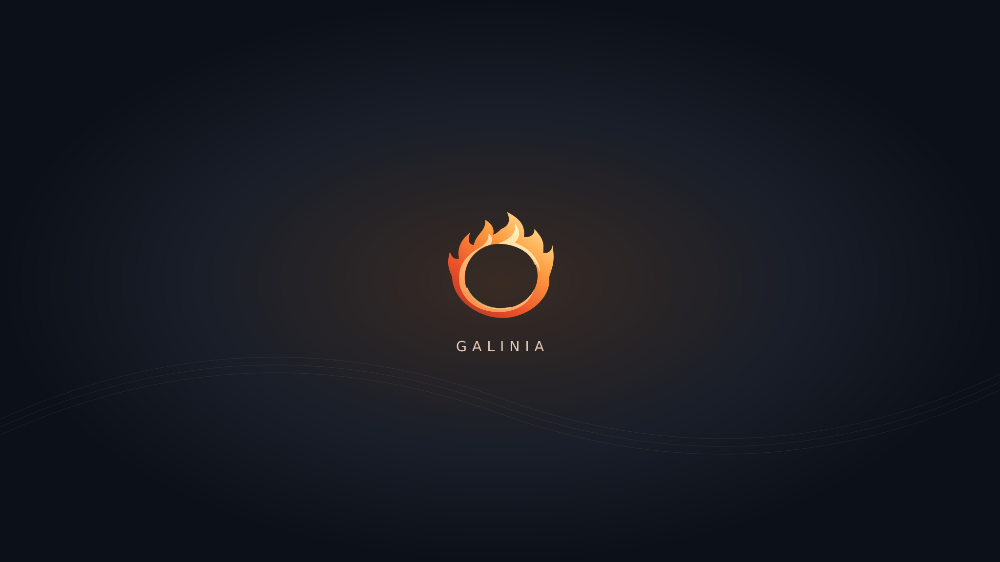
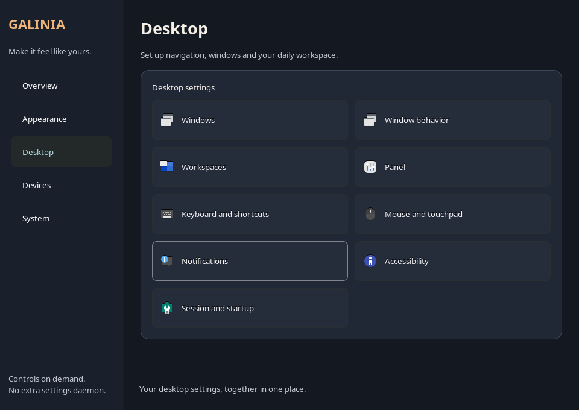

Kitty / Catppuccin MochaCTRL + SHIFT + T
galinia@desktop ~
A black canvas. A little more color.
❯
A LINUX DESKTOP TAKING SHAPE
A familiar XFCE foundation. A desktop with its own character. Galinia brings your everyday tools into one considered experience.
Development preview · General installation download not available yet

FAMILIAR, WITH A GALINIA TOUCH
Colors that follow your wallpaper. Clear settings. Shortcuts that make moving around feel natural.
Appearance, desktop, devices and system settings live together in Galinia Control Center.
Find apps with Super + Space, open settings with Super + S, and see your shortcuts with Super + /.
Established XFCE tools handle windows, workspaces, displays and power. Galinia brings the experience together.

THE THINGS YOU REACH FOR
Small details give the desktop its character, from a black terminal canvas to music controls that stay out of your way.
galinia@desktop ~
A black canvas. A little more color.
❯
SOUND & MUSIC
Volume, mute and playback controls on the desktop. A transparent card with subtle record motion while music plays.
For players that support MPRIS. Animation pauses with playback.
Capture with Flameshot. Take a screenshot, annotate it, and paste it into your work.
Keep the tools you know. Files, web browsing, media, updates and backups are part of the first alpha’s testing scope.
BUILDING IN THE OPEN
Galinia is a working desktop prototype. The first ISO is being built and qualified before we recommend it for everyday installation.
See development progressImplemented, with automated code checks.
Available in sourceIsolated build and BIOS / UEFI observation workflow.
In qualificationClean install, updates, recovery and real hardware evidence.
Not qualified yetNo fixed idle-RAM or speed claims yet. Performance comparisons and kernel changes need measured results on controlled workloads.
There is no qualified general-installation ISO yet. Source and development build evidence are available in the repository. Experimental images belong in disposable test VMs until installation and recovery checks pass.
The first alpha targets 64-bit x86 PCs with an XFCE / X11 desktop on Xubuntu 26.04. Hardware support will be stated from actual testing. Wayland and a Debian edition are not qualified targets yet.
Follow the build, review the defaults, or report a reproducible issue with the build identifier and test environment. Open the issue tracker.